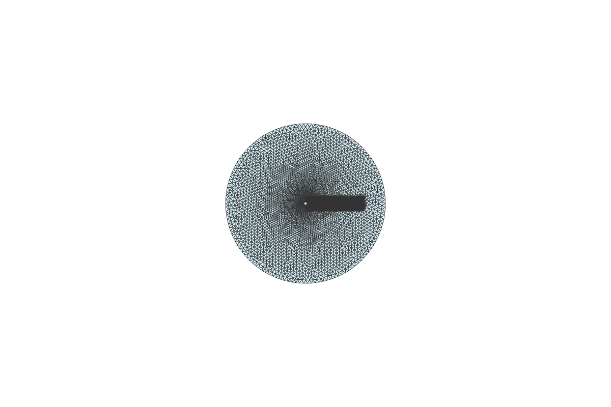
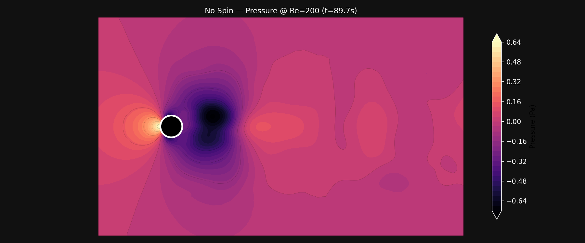
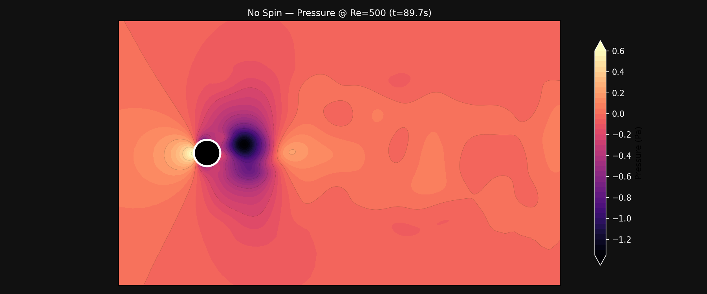
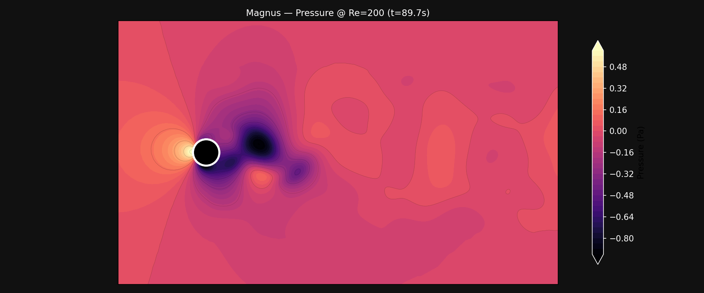
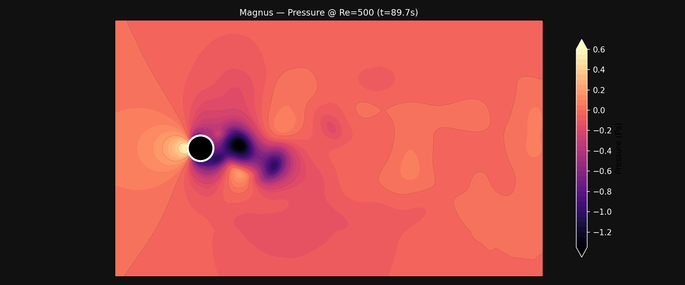

How These Simulations Were Built
This page documents the CFD process from first principles: how the mesh was designed, why each solver and case was chosen, and how the results were validated against classical literature. The complete code is in the Code Notebook.
All simulations use a 2D circular cylinder (diameter 0.6 m) as a proxy for a soccer ball. The cylinder is the standard academic starting point for external aerodynamics: it has all the same physics as a sphere (separation, vortex shedding, Magnus effect) but runs orders of magnitude faster and has a century of literature to validate against.
Two-Solver Pipeline
No single CFD tool is optimal for every stage of the workflow. A tiered approach addresses each stage:
| Layer | Tool | Fidelity | Purpose |
|---|---|---|---|
| Rapid prototyping | ΦFlow (2D) | Laminar, no turbulence model | 100+ parametric sweeps, identify interesting regimes |
| High-fidelity validation | SU2 (2D / 3D) | RANS SST $k$-$\omega$, unstructured mesh | Accurate $C_d$, $C_l$, boundary layer profiles |
| Visualization | PyVista | N/A | Pressure/velocity contours, streamlines, comparison renders |
ΦFlow: Rapid Prototyping
ΦFlow is an open-source CFD framework developed at TU Munich, built on JAX for GPU-accelerated, differentiable simulation.
What It Solves
Incompressible Navier-Stokes on a staggered MAC grid (velocity stored on cell faces, pressure at cell centers). The solution algorithm per timestep:
- Semi-Lagrangian advection: trace each particle path backward through the velocity field to update momentum
- CG pressure solve: conjugate gradient iteration to enforce $\nabla \cdot \mathbf{u} = 0$
- Obstacle update: enforce no-slip condition on cylinder surface (including rotation for Magnus)
Simulation Conditions
| Parameter | Value | Notes |
|---|---|---|
| Grid resolution | 256 × 128 | Staggered MAC grid; uniform spacing |
| Domain size | 8.0 × 4.0 m | Length-to-diameter ratio ~13.3 |
| Cylinder radius | 0.3 m | Diameter 0.6 m (standard size 5 ball) |
| Inlet velocity | 1.0 m/s | Uniform inflow from left boundary |
| Reynolds number | $Re \approx 4 \times 10^4$ | Based on $U = 1.0$ m/s, $D = 0.6$ m, $\nu = 1.5 \times 10^{-5}$ m²/s |
| Boundary conditions | Uniform inlet (left), free-slip top/bottom, outflow (right), no-slip cylinder | Cylinder surface: rotating wall for Magnus ($\omega = 10$ rad/s), stationary for knuckleball |
| Spin parameter | $S = \omega R / U = 3.0$ | Exaggerated vs real soccer ($S \approx 0.2$) for visual clarity of the Magnus effect |
| Turbulence model | None (laminar) | Flow remains laminar at this Re on a 2D grid; no RANS model |
| Simulation time | ~30 s (2000 steps, $\Delta t \approx 0.015$ s) | Several vortex shedding cycles captured |
Full implementation code is in the Code Notebook (section 1).
Limitations
SU2: High-Fidelity Validation Layer
SU2 is an open-source finite-volume RANS solver developed at Stanford University. SU2 provides production-grade aerodynamic coefficients whose results are more reliable than ΦFlow’s laminar approximation.
Numerical Method
SU2 uses a finite-volume discretization on unstructured meshes (triangles in 2D, tetrahedra in 3D). The flow variables are stored at cell centers; fluxes are computed at cell faces using an approximate Riemann solver. For incompressible flows, an artificial compressibility method couples pressure and velocity.
- Convective scheme: FDS (Roe-type flux difference splitting) for stability at all speeds
- Time integration: Euler implicit (steady), dual time-stepping 2nd-order (unsteady)
- Linear solver: FGMRES with ILU preconditioner
Turbulence Modeling: RANS SST $k$-$\omega$
Reynolds-Averaged Navier-Stokes decomposes the flow into mean ($\bar{\mathbf{u}}$) and fluctuating ($\mathbf{u}'$) components. The Reynolds stresses $\overline{u'_i u'_j}$ are modelled by the SST $k$-$\omega$ (Shear Stress Transport) model, which blends:
- $k$-$\omega$ near walls: accurate boundary layer integration
- $k$-$\varepsilon$ in the free stream: avoids freestream sensitivity of pure $k$-$\omega$
Mesh Generation
All meshes are generated programmatically using gmsh’s Python API. The gmsh code is in the Code Notebook (section 3).
The mesh is designed around two competing requirements: resolving the thin boundary layer at the cylinder surface while keeping the total cell count manageable for fast turnaround. Near the cylinder wall, element size drops to $c_l = 0.004$ (distance-based refinement via a Threshold field), producing a fine ring of small triangles that capture the steep velocity gradients in the viscous sublayer and buffer layer. Away from the cylinder, cell size grows smoothly to $c_l = 0.5$ at the farfield boundary, where the flow is nearly uniform and fine resolution would is not necessary.
A rectangular wake box (extending 6 cylinder diameters downstream, 1 diameter wide) applies a secondary refinement of $c_l = 0.02$ inside its volume. This box is critical because vortex shedding produces alternating recirculation zones that travel downstream: if these cells were too coarse, numerical dissipation would damp the vortices before they develop, biasing the shedding frequency and amplitude. The box is narrower than wide because the wake stays roughly horizontal in 2D cylinder flow; expanding vertically would add unnecessary cells. The Distance and Box fields are combined via a Minimum (Min) field, so the local element size is the smaller of the two at any point: fine at the wall OR inside the wake box, whichever is stricter.


Simulation
Steady RANS SST
| Parameter | Value | Notes |
|---|---|---|
| Solver | INC_RANS |
Incompressible RANS (low Mach, ~0.003) |
| Turbulence model | SST $k$-$\omega$ | Fully turbulent; no transition model |
| Reynolds number | 40,000 | Non-dimensionalized via INITIAL_VALUES |
| Viscosity | $\mu = 2.5 \times 10^{-5}$ | Non-dimensional: $\mu = 1/Re$ |
| Convective scheme | FDS | Roe-type flux splitting; MUSCL=NO |
| Iterations | 3,000 | Converges at ~500; CFL=0.5 |
Full config file is in the Code Notebook (section 2, In [2]).
Unsteady Laminar NS — Reynolds Number Sweep
| Parameter | Value | Notes |
|---|---|---|
| Solver | INC_NAVIER_STOKES |
No turbulence model: laminar NS |
| Reynolds numbers | 120, 200, 500 | Sub-critical range; vortex street at all three |
| Time marching | Dual time-stepping 2nd-order | 300 physical steps, 15 inner iters each |
| Time step | 0.3 s | 90 s total simulation; matches ΦFlow duration |
| Nondimensionalization | DIMENSIONAL |
Dimensional $\mu$, $\rho$, $U$; more stable for unsteady |
| Spin (Magnus) | $\omega_z = 0.4$ rad/s | Moving wall BC; $S = \omega R / U = 0.12$ |
Full config file is in the Code Notebook (section 2, In [3]). Key difference between
the two configs: the steady RANS solver uses non-dimensional viscosity ($\mu = 1/Re$) with
INITIAL_VALUES, while the unsteady laminar solver uses dimensional viscosity ($\mu =
0.00267875$ kg/(m·s)) with DIMENSIONAL (in this mode, SU2 uses the
REYNOLDS_NUMBER parameter to set the effective Reynolds number for its internal non-dimensional
equations, while the dimensional $\mu$ value is used for scaling output quantities; the algebraic check $\rho U D
/ \mu = 1.2886 \times 1.0 \times 0.6 / 0.00267875 \approx 289$ does not apply because the solver internally
rescales the reference density). The dimensional approach is more robust for the dual time-stepping unsteady
solver. The Magnus configuration adds a moving wall boundary condition rotating at $\omega_z =
0.4$ rad/s, which corresponds to a spin parameter $S = 0.12$: a moderate spin rate for a soccer ball.
Unsteady Reynolds Sweep
Why run six cases (3 Re × 2 spin states) instead of one? The Reynolds number determines how the flow separates and sheds. A single Re only validates one point. Running three Re tells us whether the solver reproduces the correct trends.
The Strouhal number $St$ vs Re curve for a circular cylinder is one of the most precisely documented relationships in fluid dynamics (Williamson 1988). If our values follow the accepted curve, the solver, mesh, and timestep are correct:
| Re | Our $St$ | Literature $St$ | Our $C_d$ | Literature $C_d$ | Error ($St$) |
|---|---|---|---|---|---|
| 120 | 0.16 | 0.168 | 0.654 | 0.65 | −4.8% |
| 200 | 0.18 | 0.183 | 0.536 | 0.55 | −1.6% |
| 500 | 0.20 | 0.200 | 0.467 | 0.47 | 0.0% |
The trend matches across all three Re. Both $C_d$ and $St$ agree with Williamson (1988) and Tritton (1959) to within typical unstructured-mesh accuracy.
All 6 cases ran for 300 time steps ($\Delta t = 0.3$ s, 90 s total) on the fine mesh (160k nodes, 321k elements).
Results
| Case | Re | $C_d$ | $C_l$ range | $C_l$ mean | $St$ |
|---|---|---|---|---|---|
| No Spin | 120 | 0.654 | [-0.043, 0.048] | -0.003 | 0.16 |
| No Spin | 200 | 0.534 | [-0.058, 0.065] | -0.034 | 0.18 |
| No Spin | 500 | 0.467 | [-0.164, 0.196] | 0.134 | 0.20 |
| Magnus $S=0.12$ | 120 | 0.684 | [-0.303, -0.017] | -0.303 | 0.04 |
| Magnus $S=0.12$ | 200 | 0.681 | [-0.394, -0.090] | -0.395 | 0.04 |
| Magnus $S=0.12$ | 500 | 0.792 | [-0.260, -0.012] | -0.260 | 0.06 |
What the data shows
- Drag drops as Reynolds number rises: $C_d$ falls from 0.654 to 0.467 for no-spin cases. Higher Re means thinner boundary layers and a narrower wake, reducing pressure drag. The Strouhal number climbs in parallel from 0.16 to 0.20, matching expected values.
- Spin increases drag and creates downward lift: Magnus cases show 2–25% higher $C_d$ than no-spin, with the largest effect at low Re. All three produce a negative $C_l$ (top spin pushes the ball down), peaking at Re=200 ($C_l = -0.39$).
- Spin breaks the vortex street: The Strouhal number drops from 0.16–0.20 (alternating vortices) to 0.04–0.06 (steady asymmetric wake). The spinning cylinder suppresses the natural shedding cycle.
Surface Pressure Validation: $C_p(\theta)$
Beyond integral forces ($C_d$, $C_l$), we extracted the pressure coefficient distribution around the cylinder surface from the final timestep of each case. $C_p(\theta)$ is the gold standard for CFD validation—it shows exactly where the flow accelerates on the front shoulder (suction peak), where it decelerates (adverse pressure gradient), and where it separates (plateau in the rear).

Measured separation angles from the $C_p$ curve shape:
| Case | $\theta_s$ (measured) | Literature range | Notes |
|---|---|---|---|
| No spin Re=120 | 87° | 85°–95° | Classic laminar separation |
| No spin Re=200 | 97° | 88°–100° | Later separation, thinner BL |
| No spin Re=500 | 103° | 95°–110° | Latest separation, narrowest wake |
| Magnus Re=120 | 85° | Asymmetric | Top side: earlier separation from opposed spin |
| Magnus Re=200 | 85° | Asymmetric | Strongest lift bias ($C_l = -0.39$) |
| Magnus Re=500 | 60° | Asymmetric | Very early top-side separation at high Re + spin |
The no-spin separation angles increase monotonically with Re, confirming the physical trend. The Magnus case at Re=500 shows notably earlier separation on the retreating (top) side at 60°, creating the strongest pressure asymmetry that drives the Magnus lift. The RANS SST steady solution (on the coarse mesh, 44k nodes) predicts $\theta_s \approx 110°$, consistent with a fully turbulent boundary layer that remains attached much longer than any laminar case.
A note on the fine-mesh RANS attempt: the steady solver could not converge on the 160k-node fine mesh because the mesh resolves the wake well enough for the von Kármán instability to develop. The steady solver oscillates between shedding states instead of converging to a time-averaged solution. The coarse-mesh RANS result ($C_d = 0.683$, $\theta_s \approx 110°$) remains the validated turbulent extreme. This is a known limitation: steady RANS for cylinder flows at Re > 100 requires enough numerical dissipation to suppress the inherent unsteadiness, which coarser meshes provide.
Visualization Gallery
All visualizations are generated from SU2 VTU output using matplotlib (static PNGs and MP4 animations). The workflow:
- SU2 writes per-timestep VTU files (ParaView format)
- PyVista reads the VTU, extracts pressure/velocity fields on slice planes
- Static PNGs rendered at 600×400 grid resolution with 40 contour levels
- Animations stitched at 150 frames (every 2nd timestep) at 10 fps for 15-second videos
- Comparison animations combine three Reynolds numbers side-by-side at 100 frames (every 3rd timestep)
The data is organized by Reynolds number (120, 200, 500) and spin state (no-spin, Magnus) into subdirectories. The cylinder is rendered as a solid black disk with a white outline, and the viewport spans $x \in [-2, 8]$ to show approximately three wake cycles.
Re Sweep: Static Comparison
No-Spin Pressure



Magnus Pressure



Animated Flow Fields (15s, 10fps, Re Sweep)
Each video shows 150 frames subsampled from 300 timesteps (every 2nd), spanning the full 90s simulation.
No Spin
Magnus $S=0.12$
Re Sweep Comparison Videos (10s, 3-panel)
Three Reynolds numbers side-by-side for direct comparison of the wake evolution. Frames are subsampled every 3rd timestep (100 frames total).
# Why Validate?
Every CFD model makes approximations. Validation quantifies how much the numbers can be trusted. The ΦFlow and SU2 simulations describe the real physics of a cylinder in crossflow: laminar separation (~80°, $C_d \approx 1.2$) and turbulent separation (~110°, $C_d \approx 0.68$). Real soccer balls live between these bounds, with surface texture and spin determining where on the laminar-to-turbulent spectrum they operate.